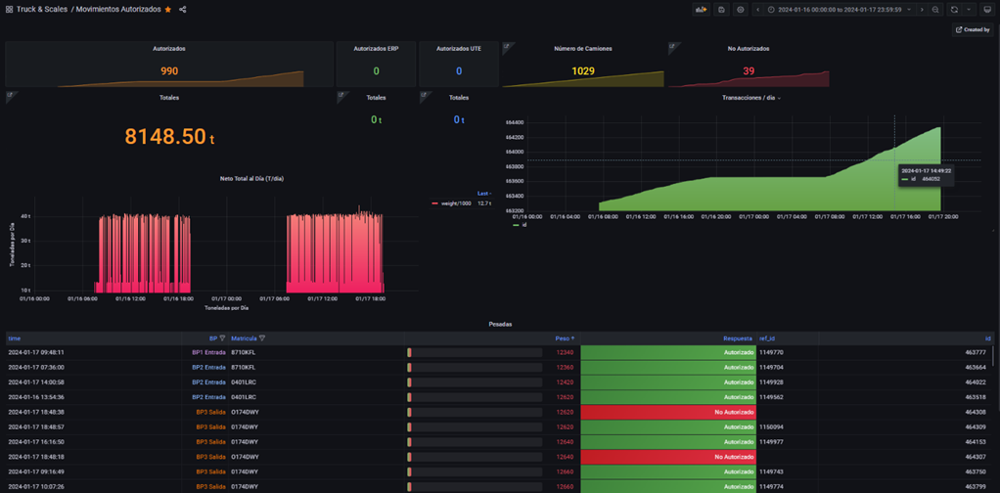
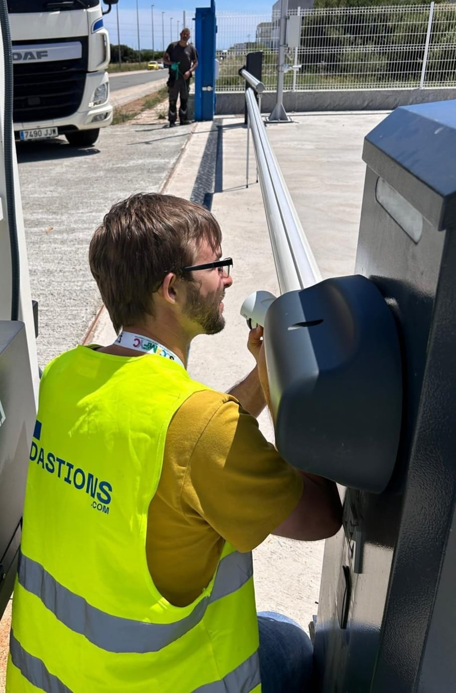

Peso automático, albarán digital, control de accesos e integración con tu ERP. Conectado a la báscula de camiones que ya tienes, sin papeleo.
No necesitas cambiar de equipo. Truck & Scales se conecta a básculas puente de camiones de cualquier marca a través de su indicador y sus células de carga.
En cuanto el camión pesa, el albarán se crea automáticamente y se guarda en la nube. Sin talonarios, sin apuntar nada a mano y sin errores de transcripción.
Captura el peso del indicador y registra cada pesada sin apuntar nada a mano.
Tickets y albaranes de pesaje digitalizados y accesibles desde la nube.
Entradas y salidas de camiones controladas, con trazabilidad de cada movimiento.
Los datos llegan a SAP, Sage, Oracle, Transkal o vía API REST en tiempo real.
Históricos, tendencias y control de más de 2.000 transacciones al día.
Supervisa y opera el pesaje a distancia, con copia de seguridad en la nube.

Aprovechamos la báscula que ya tienes: leemos el peso de su indicador y sus células de carga y lo enviamos, ya digitalizado, a tu sistema de gestión.

Sobre el software añadimos el tótem de autoservicio, la lectura de matrículas, las barreras y las cámaras, para que la báscula opere sin personal permanente.
La aplicación web parte de 89 €/mes y la automatización se activa con licencias de pago único.
Te enseñamos cómo funciona con tu báscula actual, sin compromiso.
Solicitar una demo →